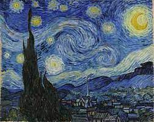

120. The Starry Night. Vincent van Gogh. 1889 CE Oil on canvas,
- Form
- Thick, short brushstrokes
- Heavy application of paint called impasto
- Parts of the canvas can be seen through the brushwork; artist need not fill in every part of the surface
- Strong left-to-right wave-like impulse in the work broken only by the tree and the church steeple
- The tree looks like green flames reaching into a sky that is exploding with stars over placid village
- Context
- The mountains in the distance are the ones that Van Gogh could see from his hospital room in Saint=Remy; steepness exaggerated
- Combination of images: Dutch church, crescent moon, Mediterranean cypress tree.
- Cypresses were often associated with cemeteries
- Landscape painting was popular in the late nineteenth century as a reaction to the industrialization of cities